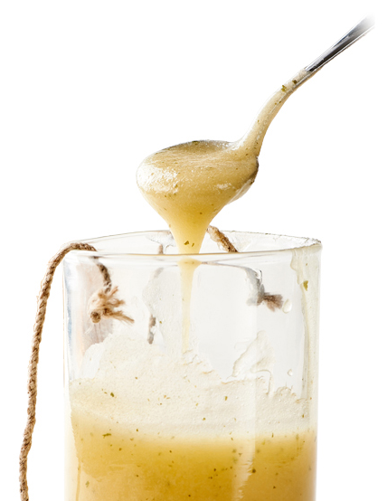

국내 토스트 대표 브랜드 "이삭토스트"
- 2019
- 매일경제 선정 '100대 프랜차이즈' 수상
- 2019년 모범납세자 포상
- '카카오톡 선물하기' 입점
- 이삭 B.I 변경
- 2018
- 매일경제 선정 ‘100대 프랜차이즈’ 수상
- 가맹점 800호점 돌파
- 2017
- 창립 15주년
- 가맹점 780호점 돌파

- 2016
- 매일경제 선정 ‘100대 프랜차이즈’ 3회 연속 수상
- 브랜드 전속모델 ‘조정석’ 계약체결
- 대만 해외시장 진출

- 2015
- 대한민국 사회공헌브랜드대상 수상
- 고객의 마음을 움직이는 ‘공감브랜드대상’ 수상
- KBS2 드라마 ‘오늘부터 사랑해’ 제작지원
- 2014
- MBC 드라마 ‘왔다! 장보리’ 제작지원
- 마카오 해외시장 진출
- 2013
- 소상공인시장진흥공단 ‘우수 프랜차이즈’ 선정

- 2012
- 대한민국 대표 우수기업 인증
- 이삭 B.I 교체
- 2011
- 소비자(고객)만족 대상

- 2008
- KB국민은행 우수 프랜차이즈 가맹점 선정
- 2007
- 제 8회 프랜차이즈 대상 수상
- 2006
- 2006 히트상품 선정
- ㈜동행 상표등록
- 2005
- 2005 히트상품 선정
- 2004
- ㈜이삭 법인설립
- 2003
- ISAAC 상표등록
- 이삭소스 특허등록
- 프랜차이즈 가맹사업 시작
- 동행푸드 공장건축

- 1995
- 개인사업 시작
- 이삭소스 개발
- 특제오븐 개발